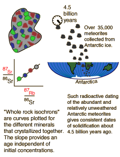

Dating of Antarctic Meteorites
|  | The use of radioactive dating on meteorites removes some of the uncertainties of the process because they have not been subject to the severe weathering and other Earth processes which might affect the ratios of the constituents of other rocks. Particularly promising are the meteorites found in Antarctica since they have been well preserved in the ice. Intensive collection efforts since about 1970 have collected over 35,000 of these meteorites. |
The stony meteorites found in Antarctica are thought to be some of the most ancient, and the least disturbed from the time of their formation. Fraknoi, et al. report that almost all these meteorites have radioactive ages between 4.48 and 4.56 billion years. When the best data and the most accurate values for half-lives are combined, these Antarctic meteorites give an age of 4.54 billion years with an uncertainty of less than 0.1 billion years.
|
Index
Reference
Fraknoi, Morrison & Wolff.
Ch 13 |